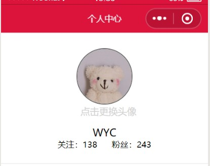

我们在使用小程序的时候，注册个人账号时，通常会有要更换个人头像的情况，那么这个上传图片文件更换头像的过程该如何实现呢？

wxml中要配置一个bindtap绑定事件headimage；以及对要作为头像的图片进行head的数据绑定进行配置。代码如下：
<view class='v1'>
<image class='head' bindtap="headimage" src='{{head}}'></image>
<view class='text' mode="aspecFill" bindtap="headimage">点击更换头像</view>
</view>
wxss中只需要配置所需的头像边框形式（border-radius）、颜色以及图文大小、位置即可。代码如下：
.v1{
display: flex;
flex-direction: column;
align-items: center;
}
.head {
margin-top: 30rpx;
width: 200rpx;
height: 200rpx;
border-radius: 50%;
border: 1px solid dimgrey;
}
.text {
line-height: 50rpx;
color: lightgray;
font-size: 35rpx;
}
js中配置绑定对数据内容或已绑定的事件处理函数。
head数据配置初始呈现头像图片，headimage作为事件处理函数中使用一个API wx.chooseImage来从本地相册选择图片或使用相机拍照。代码如下：
data{
showModal: false,
head: "/images/touxiang.jpg",
},
// 点击更换手机相册或者电脑本地图片
headimage: function () {
var _this = this;
wx.chooseImage({
count: 1, // 默认9
sizeType: ['original', 'compressed'],
// 指定是原图还是压缩图，默认两个都有
sourceType: ['album', 'camera'],
// 指定来源是相册还是相机，默认两个都有
success: function (res) {
_this.setData({
head: res.tempFilePaths
})
}
})
},
更换头像是小程序日常使用非常普遍的操作，应用广泛值得掌握，但是本次配置存在的不足时更换头像之后无法保存的问题。请持续关注，后续会继续改进。